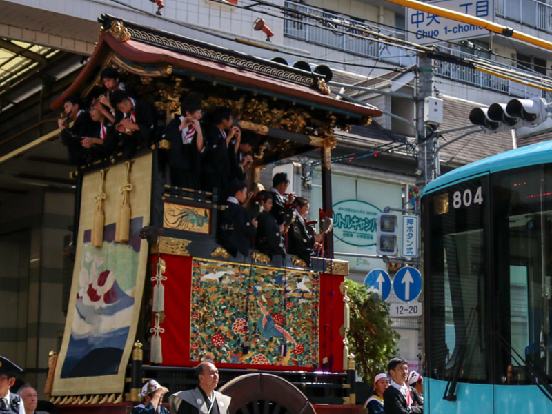

粽について粽の扱い方
大津祭の粽は１年間、玄関や軒先などに飾り、厄除けと無病息災を祈るものです。
返納方法
古くなった粽は、近くの神社の古札納所にお納め下さい。
天孫神社の場合は、祭礼から１０月末までと、正月から１月１５日までの間、 本殿前に設ける粽納所にお納め下さい。
なお、納める際は、袋や巻紙を外し、粽のみとしてください。
天孫神社の場合は、祭礼から１０月末までと、正月から１月１５日までの間、 本殿前に設ける粽納所にお納め下さい。
なお、納める際は、袋や巻紙を外し、粽のみとしてください。